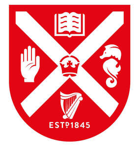

Trade Mark Journal No.2026/012 20 March 2026
UK00004294943 14 November 2025 (9,14,16,18,21,25,26,28,35,41,42,44,45)

- Class 9
- Computer software and computer programs; computer databases; film; audio and video cassettes, tapes and discs, magnetic data carriers; computer hardware; pre-recorded tapes, disks, audio and video cassettes, CD-ROMs, DVD's, laser readable media; encoded cards, identity cards, cards bearing machine readable information; USB cables; phone cases; publications in electronic form supplied on-line from a database or from the Internet or other networks (including web sites); downloadable and recorded content; apparatus for recording, transmission or reproduction of sound, images or data; microscopes; measuring instruments; scientific apparatus and instruments; computer programs; downloadable software and applications; computer software for teaching, instructional and educational purposes; parts and fittings for all the aforesaid goods.
- Class 14
- Jewellery, precious stones, watches, clocks, precious metals and their alloys; lapel pins; lapel badges of precious metals; necklaces; earrings; rings; boxes; trinkets; decorative pins; tie clips; cufflinks; hat ornaments; jewellery cases; shoe ornaments; clothing ornaments; key charms; bag charms; keyrings; key fobs; all of the aforementioned made of or coated with precious metals and their alloys; bracelets, brooches, cufflinks, medals, ornaments, made of or coated with precious or semi-precious metals or stones, or imitations thereof, shoe ornaments, cufflinks made of imitation gold, ornamental pins, tie pins, tie clips, watch straps.
- Class 16
- Paper and cardboard; Printed matter; Bookbinding material; Photographs; Stationery; Adhesives for stationery or household purposes; Artists' materials; Paintbrushes; Typewriters and office requisites [except furniture]; Instructional and teaching material [except apparatus]; plastic materials for packaging; Printers' type; Printing blocks; adhesive tape dispensers [office requisites]; adhesive tapes for stationery or household purposes; adhesives [glues] for stationery or household purposes; albums/scrapbooks; almanacs; announcement cards [stationery]; arithmetical tables; atlases; binding strips [bookbinding]; biological samples for use in microscopy [teaching materials]; blackboards; blotters; book bindings; bookends; booklets; bookmarkers; books; calendars; cards; charts; catalogues; charcoal pencils; clipboards; clips for offices; staples for offices; bookbinding cloth; comic books; compasses for drawing; composing frames [printing]; copying paper [stationery]; cords for bookbinding; correcting fluids [office requisites]; correcting tapes [office requisites]; diagrams; document laminators for office use; document files [stationery]; document holders [stationery]; drawing materials; drawing pads; drawing pens; drawing sets; drawing pins; elastic bands for offices; envelopes [stationery]; files [office requisites]; flyers; folders for papers; folders [stationery]; printed forms; fountain pens; geographical maps; handwriting specimens for copying; histological sections for teaching purposes; index cards [stationery]; indexes; ledgers [books]; magazines [periodicals]; manuals; handbooks; marking pens; newsletters; newspapers; note books; numbers [type]; pads [stationery]; pamphlets; paper; paper sheets [stationery]; paper-clips; paperweights; pencil leads; pencil sharpeners, electric or non-electric; pencils; pens [office requisites]; periodicals; pictures; postcards; posters; printed publications; printing type; prospectuses; rubber erasers; school supplies [stationery]; song books; stickers; teaching materials [except apparatus]; terrestrial globes; writing instruments; writing pads; writing cases [sets]; writing materials; writing cases [stationery]; writing or drawing books; writing paper; exercise books; Bibles; printed awards; printed certificates; reference books; dictionaries; directories; reports; magazines; journals periodicals; exam papers; lecture notes; worksheets; quizzes; printed puzzles; flashcards; vocabulary lists; paper, books, booklets, documents, forms, brochures, cards, instructional and teaching materials in Class 16 all relating to the training, testing, examination and assessment of candidates for educational achievement, and to the provision of training, testing, examination and assessment services, including computer assisted, computer mediated services and on-line services and to the provision of distance learning programmes; parts and fittings for all the aforesaid goods; publishing products, namely printed matter, in particular books, periodicals.
- Class 18
- Leather and imitation leather; suitcases; umbrellas and parasols; walking sticks; whips, harness and saddlery; card cases (wallets); key cases (leather goods); attaché cases; briefcases (leather goods), attaché cases; document portfolios [cases]; moleskin (imitation leather), imitation leather; beach umbrellas; whips and saddlery goods; wallets; coin purses not of precious metal; handbags; backpacks; wheeled bags; bags for climbers; bags for campers; travel bags; beach bags; school bags; shopping bags; suitcases and boxes designed to contain toiletries; travel sets (leather goods); toiletry sets and make-up bags (empty); net bags for shopping; bags and net bags for shopping; bags and small bags (envelopes, pouches) of leather for packaging; parts and fittings for all the aforesaid goods.
- Class 21
- Household or kitchen utensils and containers; glassware, porcelain and earthenware; crockery; pots; pottery; combs; brushes; toothbrushes; mugs; dishes; glasses; tableware; water bottles; vases; bottles; piggy banks; pails; cocktail shakers; cooking pots and pans; flower pots; insulating flasks; vacuum bottles; oven mitts.
- Class 25
- Clothing, footwear and headgear; t-shirts; sweatshirts; sweaters; jackets; suits; skirts; trousers; dresses; shoes; socks; caps; hats; underwear; belts; sportswear; school uniforms; university gowns and hoods; parts and fittings for all the aforesaid.
- Class 26
- Belt buckles and badges, articles of common metal for use as parts, fittings or ornaments for clothing.
- Class 28
- Gymnastic and sporting articles and equipment; toys; games; playthings.
- Class 35
- Business management and business administration; consultancy services relating to help in the working or management of a commercial undertaking and help in the management of the business affairs or commercial functions of an industrial or commercial enterprise; accountancy; advertising, marketing and promotional services; business assistance, management and administrative services; business services related to science, technology and innovation; business inquiry services; business enquiries; business strategy services; brand strategy services; business management and advice relating to arranging of research contracts; business research; business management; office functions; provision of office facilities; business planning; arranging business and commercial opportunity introductory services; business networking services; business advisory services for facilitation and brokering in connection with the exchange and promotion of knowledge between companies, academia and organisations; provision of business information and support services; business services relating to the arrangement of joint ventures and venture capital schemes; business services to facilitate and support the transfer of technology; business advisory services for the purpose of commercialising technology; business advisory services to support the development and promotion of spin-out projects and companies; business management and consultancy services to support the establishment and development of technology-based businesses; provision of initial company secretarial services on company formation; corporate planning services; consultancy and advisory services relating to the corporate structure of businesses; business administration of employee share schemes; corporate management consultancy; advisory and consultancy services relating to the establishment of businesses, recruitment services; organization of incentive schemes for joint ventures and franchise schemes; management and operational assistance to commercial businesses; appraisal of business opportunities; business development and mentoring services; market research and analysis services; data processing; data compilation and retrieval; advisory, consultancy and information services relating to all of the aforesaid services; preparation and compilation, including analysis, evaluation and presentation of technical and statistical data; information, advisory and consultancy services in relation to the aforesaid.
- Class 41
- Academic services provided by universities; university services; conferral of degrees; arranging and conducting seminars, symposiums, conferences, workshops and congresses; publication of books; conducting correspondence courses; teaching, lecturing and tutorial services; educational and training services; providing information concerning education; educational examinations; organisation of exhibitions for educational purposes; lending libraries and library services; provision of sporting, cultural and entertainment activities; museum services; rental of educational apparatus and instruments; publishing services; publishing of electronic publications; electronic publishing services; provision of information relating to teaching, instruction, research and education; provision of online-electronic publications; publishing services provided by means of the Internet and world-wide web; conducting correspondence courses; teaching, lecturing and tutorial services; educational and training services; providing information concerning education; educational examinations; organisation of exhibitions for educational purposes; lending libraries and library services; provision of sporting, cultural and entertainment activities; production of radio and television programmes; museum services; rental of educational apparatus and instruments; information, advisory and consultancy services in relation to the aforesaid.
- Class 42
- Scientific and technological services and research and design relating thereto; university research and development services; scientific research and development services; medical research services; scientific analysis; clinical outcome assessment services; industrial analysis and research services; design and development of diagnostic apparatus; research and development in the field of diagnostic preparations; computer aided diagnostic testing services; design and development of computer hardware and software; joint venture and collaborative industrial analysis, research and development services; technical project studies; software as a service; cloud computing services; rental of software; platform as a service; hosting of digital content on the Internet; hosting of computerised data, files, applications and information; data migration services; data storage; electronic storage of files and documents; preparation and compilation, including analysis, evaluation and presentation of technical and statistical data; consultancy and advisory services for the development and support of technology transfer; arrangement of analysis and testing of materials; information, advisory and consultancy services in relation to the aforesaid.
- Class 44
- Medical services; veterinary services; hygienic and beauty care for human beings or animals; agriculture, horticulture and forestry services; medical information; providing medical information; medical consultation; medical consultancy services; health care consultancy services [medical]; medical advisory services; medical analysis services; medical assistance services; medical testing; medical nursing services; medical treatment services; medical care services; medical diagnostic services; medical evaluation services; medical clinic services; medical counselling services; health counselling; health care advisory and consultancy services; medical health assessment services; therapy services; veterinary assistance; veterinary surgery; veterinary surgical services; veterinary advisory services; dentistry; pharmaceutical services; opticians' services; mental health services; provision of medical services; provision of medical information; providing information relating to medical services; medical information retrieval services; issuing of medical reports; preparation of reports relating to medical matters; tele-reporting (medical services); residential medical advice services; residential medical treatment services; information, advisory and consultancy services in relation to the aforesaid.
- Class 45
- Professional consultancy services relating to law; social services; legal services; intellectual property services; consultancy services relating to the filing and prosecution of applications for registration of intellectual property and industrial property rights; licensing of intellectual property rights; advisory services relating to the licensing and infringement of intellectual property rights; licensing of patents, copyright and intellectual property; company formation services; licensing of research and development; information, advisory and consultancy services in relation to the aforesaid.
The Queen's University of Belfast
Representative: Murgitroyd & Compamy